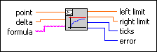
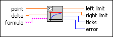
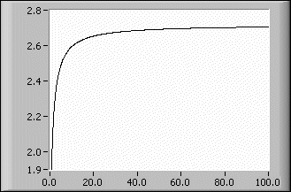

Limit VI
Owning Palette: Calculus VIs
Requires: Full Development System
Determines the left and right limits of a 1D function at a given point.

 Add to the block diagram Add to the block diagram |
 Find on the palette Find on the palette |
Owning Palette: Calculus VIs
Requires: Full Development System
Determines the left and right limits of a 1D function at a given point.

| Add to the block diagram |
Find on the palette |
 |
point is the point at which the limits have to be calculated. The default is 0.0. |
|
delta is the distance to the left and right neighbor of point. The default is 1E–10. |
 |
formula is a string describing the function under investigation. The formula can contain any number of valid variables. |
 |
left limit is the left limit of the given function at point. The accuracy is up to 8 decimal digits. |
|
right limit is the right limit of the given function at point. The accuracy is up to 8 decimal digits. |
 |
ticks is the time in milliseconds to analyze the formula and to produce limits. Usually, the time is negligible for the limit operations. |
 |
error returns any error or warning from the VI. You can wire error to the Error Cluster From Error Code VI to convert the error code or warning into an error cluster. |
The algorithm calculates only the two values f(point–delta) and f(point + delta). Furthermore, delta is internally rounded to a power of 2.
 | Note A very small delta value can result in numerical inaccuracies. You should take a value of delta = 1E–10 in all cases. |
The function
f(x) = (1 + 1/x)x
has the famous limit e (Euler) if x tends to infinity. You can use the Limit VI to determine the Euler number if you define
g(x) = (1 + x)(1/x)
for small positive x. By entering
(1+x)^(1/x)
in the formula control on the front panel, you can find the limit. The following illustration shows the convergence of f(x) to e.
